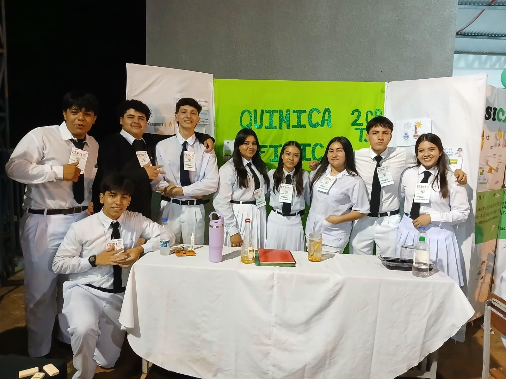
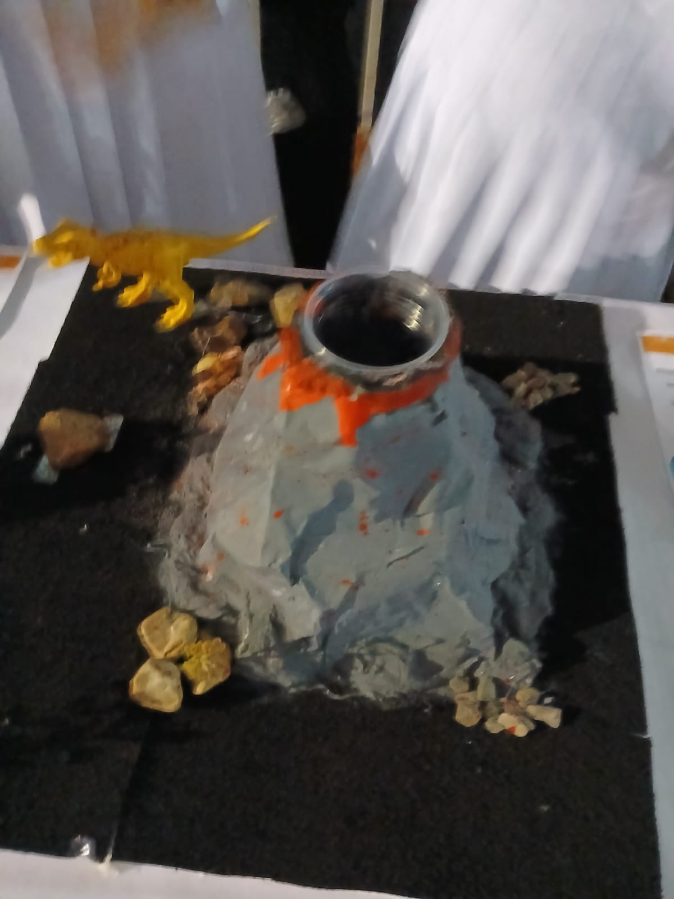
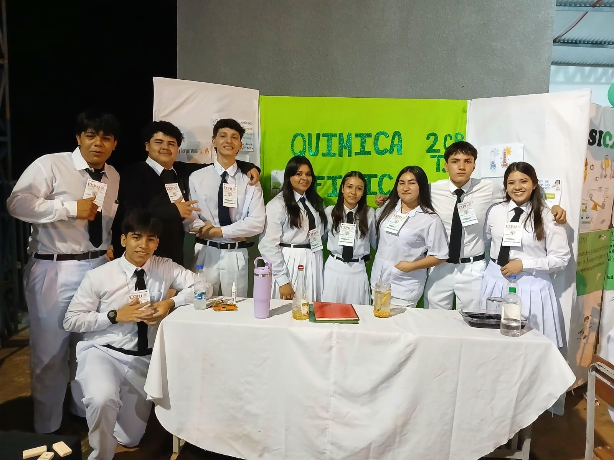
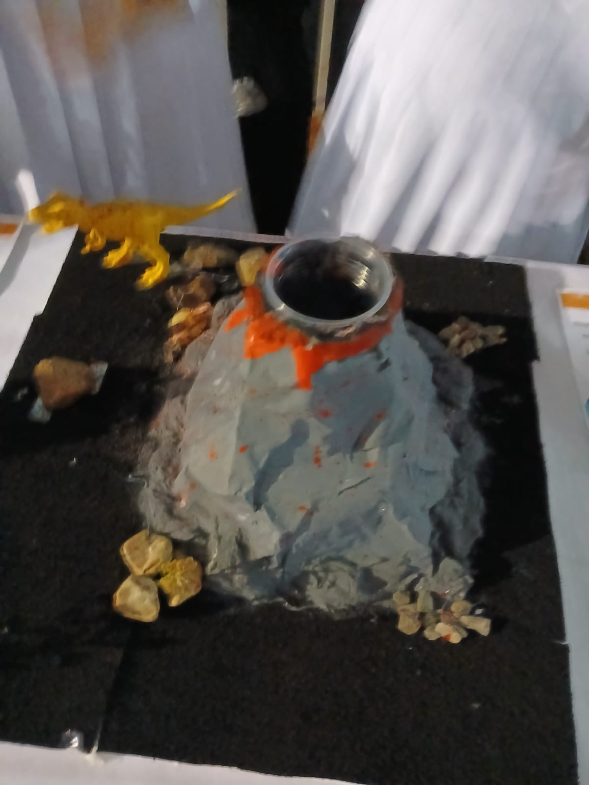

Participación en el Proyecto Ñe'ery: Autores Nacionales
El Colegio Nacional Salto del Guairá ha formado parte del "Proyecto Ñe'ery: Autores Nacionales", un programa que tiene como objetivo la lectura, defensa y elaboración de historietas con un enfoque en nuestra cultura nacional. A través de este proyecto, nuestros estudiantes han tenido la oportunidad de adentrarse en el mundo de los autores nacionales, aprender sobre nuestra historia y cultura, y poner en práctica su creatividad al crear sus propias historietas. Este proyecto ha sido una experiencia enriquecedora que permite a los estudiantes desarrollar habilidades literarias y artísticas, mientras refuerzan su identidad cultural.
ExpoCiencias 2024
Agradecimiento Especial
En nombre del Colegio Nacional Salto del Guairá, queremos expresar nuestro más sincero y profundo agradecimiento a todos los que hicieron posible la realización de esta Segunda Expoferia de Física y Química. Este evento, que hemos compartido con tanto entusiasmo, solo ha sido posible gracias al compromiso, apoyo y dedicación de cada persona e institución involucrada.
Agradecemos, en primer lugar, a Dios, quien nos brinda salud y la oportunidad de trabajar en comunidad.
A nuestra Supervisora Pedagógica, Magíster Silvina Santacruz, por su acompañamiento constante y su apoyo invaluable. Su presencia nos inspira y da relevancia a cada uno de nuestros esfuerzos.
A nuestras instituciones invitadas:
Universidad Privada del Guairá (UPG), representada por la Magíster Susana Franco.
Instituto de Formación Docente Nuestra Señora de Stella Marys representada por Magíster Cecilia Ramona Alfonso.
Universidad Politécnica y Artística del Paraguay (UPAP).
Gracias a todos los evaluadores de estas instituciones, quienes dedicaron su tiempo y conocimientos para valorar los trabajos de nuestros estudiantes. Sus observaciones y orientaciones son una fuente de aprendizaje y motivación para todos.
Un agradecimiento especial también a nuestros profesores y directivos, quienes guiaron, prepararon y acompañaron a los estudiantes con tanto esmero, desde el inicio de sus proyectos hasta el día de hoy. Este evento es el reflejo de su esfuerzo y vocación.
A los padres de familia, gracias por su apoyo incondicional, por animar a sus hijos a explorar el mundo de la ciencia y estar presentes en cada momento importante.
Queremos reconocer también a nuestros alumnos, quienes con esfuerzo y dedicación llevaron adelante cada proyecto. Ellos son el verdadero motor de esta feria, demostrando que el aprendizaje va más allá del aula y se convierte en experiencias significativas.
Por último, extendemos un agradecimiento especial a nuestros youtubers invitados Rafael, Lucas y Evelyn, quienes, a través de sus transmisiones en vivo, permitieron que nuestra feria llegara a una audiencia más amplia, compartiendo la emoción de este evento con todos.
Con este agradecimiento, cerramos esta Expoferia de Física y Química, agradeciendo a todos por su participación y apoyo. Que este sea un paso más en el camino del aprendizaje, el compañerismo y el compromiso con la educación.


 


